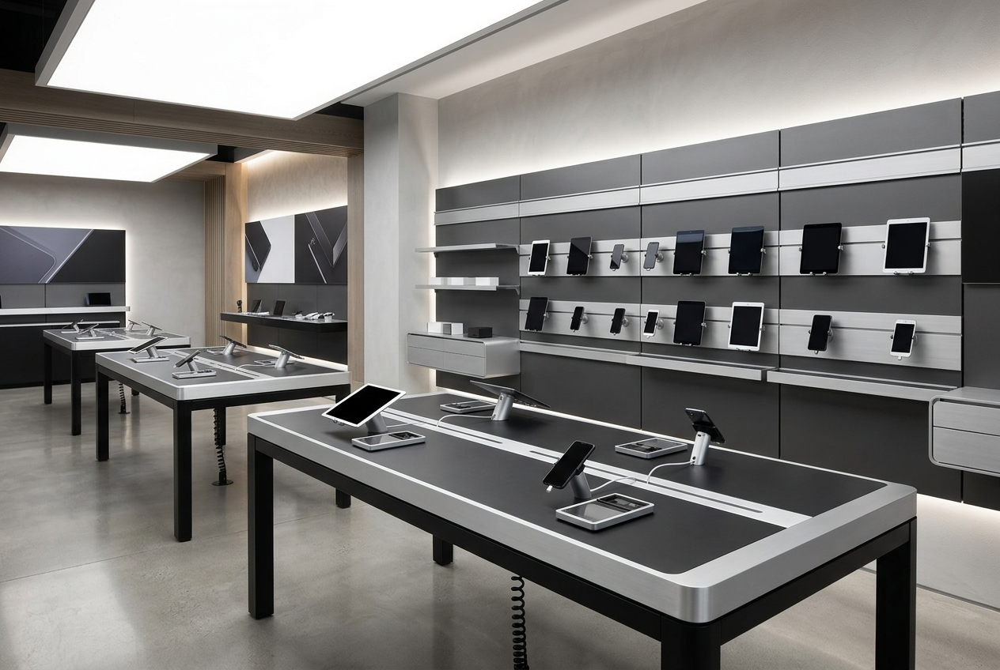

1. 1000/1100mm 雙層挺拔作業線
淘汰傳統 850mm 彎腰矮櫃，定調 1000mm 站姿作業線（符合 DIN 33406）；松山店進一步確立 1100mm 顧客吧檯與 1000mm 內部檢測高差，提供店員 20 分鐘拆鏡零疲勞體態與估價系統隱私。
PRECISION ELECTRONICS & CIRCULAR RETAIL / 2017-2022
以台灣收多益 3C (US3C) 六年六店為實證背景，記錄 Big Fame 如何以 100cm 站姿手肘線、45° 無框平接超白玻璃與 450mm 淺展架動線救贖，協助科技循環品牌打破中古市場猜忌，建立高信任度實體零售網絡。

傳統二手 3C 門市常陷於「燈光昏暗死角、電線交纏、商品雜亂堆疊、充滿壓價防備心」的刻板印象。US3C 決心將二手交易轉化為如鐘錶工坊般的透明驗證所，讓高客單價的 Leica 鏡頭、MacBook Pro 與 Sony 旗艦相機得到最高禮遇。
Big Fame 承擔了長達六年的空間研發與什器製造責任。從 2017 台北創始店的消光黑鋼構與樺木夾心美學，到 2018 楊總檢討會的大刀闊斧改良，再到南港、府中、高雄、松山與桃園東門店的模組化定型，累積 815 份正式工程 CAD 圖紙，將整店展店工期由 3 週大幅壓縮至 48 小時內。
淘汰傳統 850mm 彎腰矮櫃，定調 1000mm 站姿作業線（符合 DIN 33406）；松山店進一步確立 1100mm 顧客吧檯與 1000mm 內部檢測高差，提供店員 20 分鐘拆鏡零疲勞體態與估價系統隱私。
全面拔除金屬邊框，升級為 8mm 日本旭硝子超白強化玻璃 45° 平接工藝。搭配 15° 微仰斜面沖孔板與 4000K 隱藏聚光燈，直射光學鏡片鍍膜，彻底根除高價鏡頭進出磕碰崩角風險。
舊版踢腳僅 50mm 導致正面水泥木纖板頻繁被鞋頭踢裂。Big Fame 將內縮擴大至 150~200mm，底緣全線鎖固 t1.2mm 不鏽鋼毛絲面防踢條，經受住一線高頻物理衝擊。
板橋府中店受限於狹長老屋與中央樓梯，Big Fame 大膽將靠牆重型角鋼架深度由 600mm 削薄至 450mm，成功將主通道拓寬至 1150mm，守住雙向交錯與無障礙安全底線。
針對驗機桌隨時插滿多組 PD 與變壓器的混亂，開闢 25mm 橢圓穿線孔與金屬出線蓋板；下層機櫃門片採用 40% 沖孔率金屬沖孔門，確保大瓦數設備全速運轉時空氣暢通對流。
開創主櫃台、轉角櫃、鐵網機櫃與活動桌板之模組化互鎖結構，並在高雄旗艦店導入「KD 體驗大桌板」，實現全台門市按圖選號、工廠預製、現場極速組裝。
首度研發消光黑鋼管、樺木多層夾心板與水泥木纖板複合什器體系；完成系列 A3 正式製作圖並完成物流中心組裝測試。
匯整一線痛點：櫃台拉抬至 100cm、加裝不鏽鋼防踢板、升級平接玻璃、橢圓穿線孔、軟質水平調整腳輪。
開創「四等分 KD 模組拆解」與「240cm 整面發光科技光牆」，國際海運材積銳減 70%，確立全球拓拓能力。
建立標準下單圖庫 (DWG/SketchUp)，出線孔位、公文櫃與木作收尾規格化，開啟全台標準化連鎖複製。
實施動線避讓 Plan C，採用深 450mm 角鋼架釋放通道；正式推出首款「收多益組合式模組櫃台 (Modular KD Counter)」。
導入「KD 體驗驗機大桌板」營造大器迴游動線；松山店將櫃台微調為 1000/1100mm 雙層櫃，下機櫃 600+400mm 分割。
2022 年桃園東門市場新店型進一步導入「方格金屬組合櫃台 (Grid Matrix Counter)」，展示系統邁向極致成熟。
2017～2022 年，累計 6 間實體門市、1 間物流中心與 1 次海外提案。
815 份 AutoCAD 施工製作圖 (DWG/PDF)、3D SketchUp 模型與現場品檢清單。
消光砂黑烤漆鋼管 (t>=1.4mm)、有節樺木/松木多層夾板 (厚18~20mm)、t15mm 木纖水泥板、超白強化玻璃。
DIN 33406 站姿 1000/1100mm 作業線、45° 無框平接安全、180mm 深踢腳避讓、走道淨寬 >= 1150mm。
全模組化預製，門市現場拼裝工期縮短 60%，48 小時內完成硬體組裝迎賓。
本案淬鍊之工程金律已正式衍生出海外北歐旗艦店型：CIRCUIT & CRAFT。